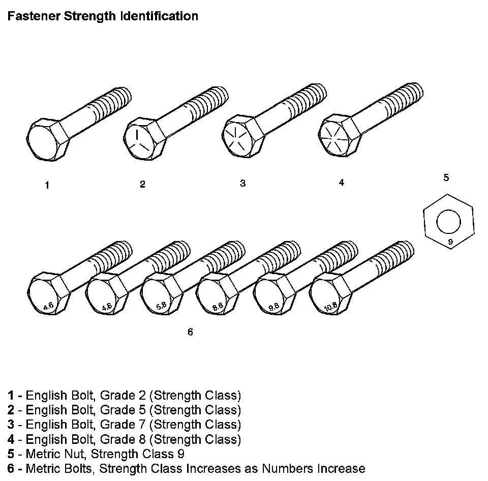
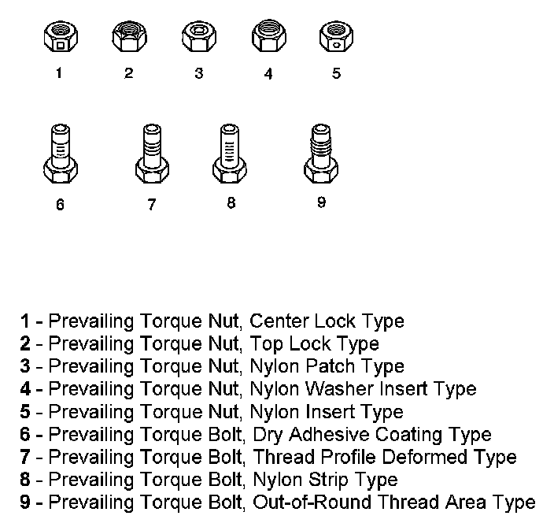
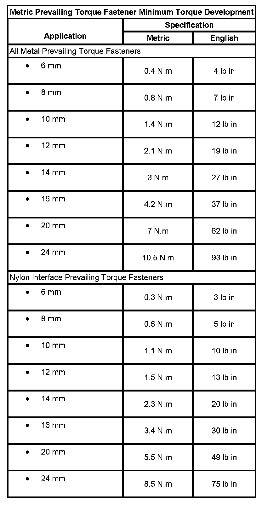
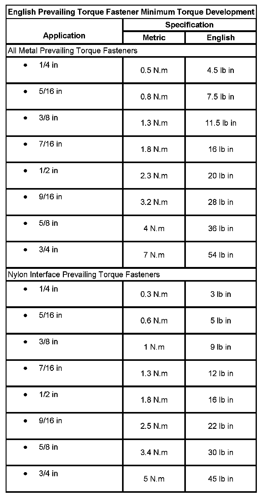

Fasteners
FASTENERS
METRIC FASTENERS
This vehicle provides fastener dimensions using the metric system. Most metric fasteners are approximate in diameter to equivalent English fasteners. Make replacements using fasteners of the same nominal diameter, thread pitch, and strength.
A number marking identifies the OE metric fasteners except cross-recess head screws. The number also indicates the strength of the fastener material. A Posidrive(R) or Type 1A cross-recess identifies a metric cross-recess screw. For best results, use a Type 1A cross-recess screwdriver, or equivalent, in Posidrive(R) recess head screws.
GM Engineering Standards and North American Industries have adopted a portion of the ISO-defined standard metric fastener sizes. The purpose was to reduce the number of fastener sizes used while retaining the best thread qualities in each thread size. For example, the metric M6.0 X 1 screw, with nearly the same diameter and 25.4 threads per inch replaced the English 1/4-20 and 1/4-28 screws. The thread pitch is midway between the English coarse and fine thread pitches.
FASTENER STRENGTH IDENTIFICATION
Fastener Strength Identification:

The most commonly used metric fastener strength property classes are 9.8 and 10.9. The class identification is embossed on the head of each bolt. The English, inch strength classes range from grade 2 to grade 8. Radial lines are embossed on the head of each bolt in order to identify the strength class. The number of lines on the head of the bolt is 2 lines less than the actual grade. For example, a grade 8 bolt will have 6 radial lines on the bolt head. Some metric nuts are marked with a single digit strength identification number on the nut face.
The correct fasteners are available through GMSPO. Many metric fasteners available in the aftermarket parts channels are designed to metric standards of countries other than the United States, and may exhibit the following:
- Lower strength
- No numbered head marking system
- Wrong thread pitch
The metric fasteners on GM products are designed to new, international standards. The following are the common sizes and pitches, except for special applications:
- M6.0 X 1
- M8 X 1.25
- M10 X 1.5
- M12 X 1.75
- M14 X 2.00
- M16 X 2.00
PREVAILING TORQUE FASTENERS
Prevailing torque fasteners create a thread interface between the fastener and the fastener counterpart in order to prevent the fastener from loosening.
ALL METAL PREVAILING TORQUE FASTENERS
These fasteners accomplish the thread interface by a designed distortion or deformation in the fastener.
NYLON INTERFACE PREVAILING TORQUE FASTENERS
These fasteners accomplish the thread interface by the presence of a nylon material on the fastener threads.
ADHESIVE COATED FASTENERS

These fasteners accomplish the thread interface by the presence of a thread-locking compound on the fastener threads. Refer to the appropriate repair procedure in order to determine if the fastener may be reused and the applicable thread-locking compound to apply to the fastener.
A prevailing torque fastener may be reused ONLY if:
- The fastener and the fastener counterpart are clean and not damaged
- There is no rust on the fastener
- The fastener develops the specified minimum torque against its counterpart prior to the fastener seating
Metric Prevailing Torque Fastener Minimum Torque Development:

METRIC PREVAILING TORQUE FASTENER MINIMUM TORQUE DEVELOPMENT
English Prevailing Torque Fastener Minimum Torque Development:

ENGLISH PREVAILING TORQUE FASTENER MINIMUM TORQUE DEVELOPMENT